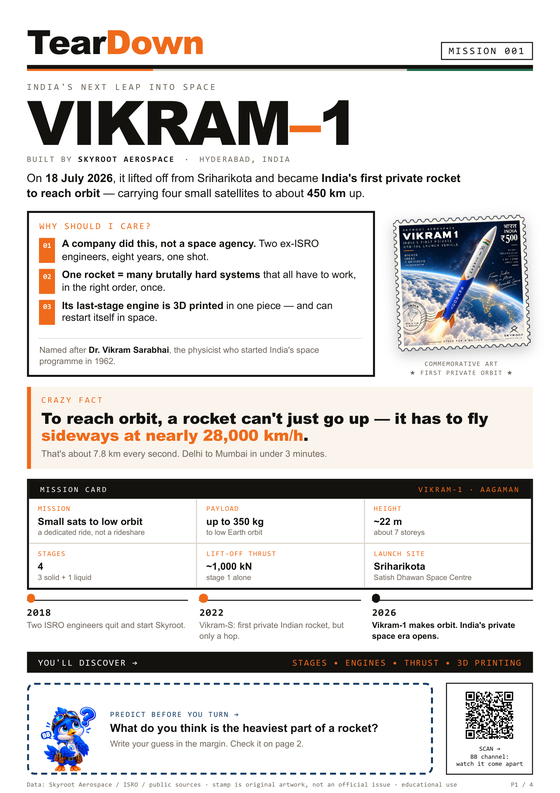
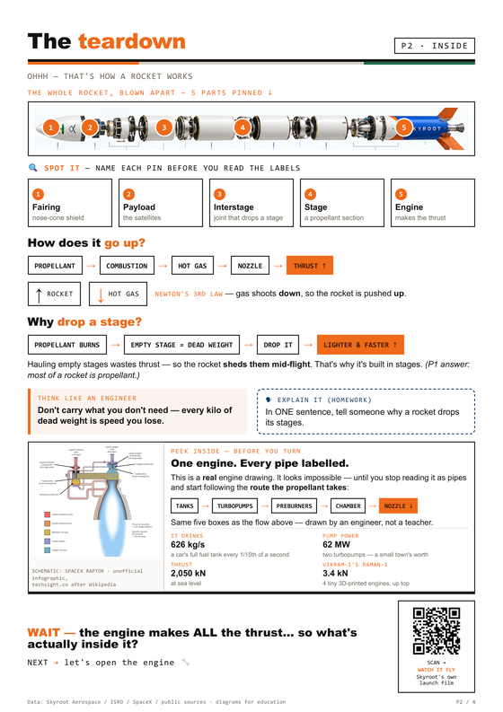
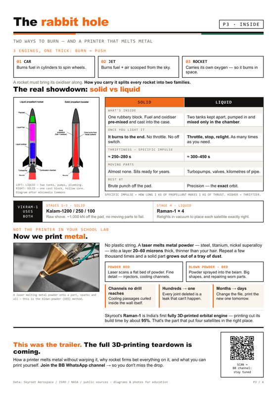
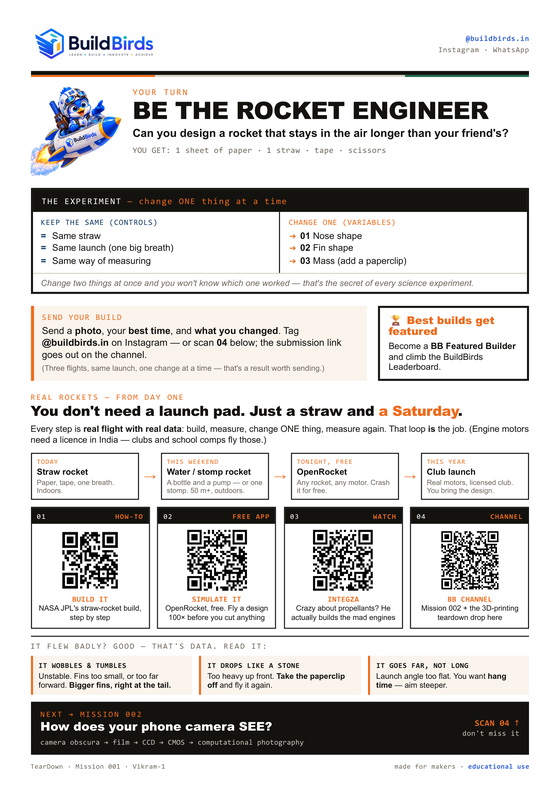

India's next leap into space
Vikram-1: India's first private orbital rocket, taken apart
On 18 July 2026, a rocket built by a Hyderabad startup lifted off from Sriharikota and put four satellites into orbit. It was the first time an Indian company — not the national space agency — had done it. Here is what is inside it, and why every part is shaped the way it is.
The short version
- Vikram-1 is a four-stage small-lift launch vehicle from Skyroot Aerospace, about 22 m tall, carrying up to 350 kg to low Earth orbit.
- It reached orbit on its demonstration flight, Aagaman, on 18 July 2026 from the Satish Dhawan Space Centre, targeting roughly 450 km altitude.
- Stages 1–3 are solid (Kalam-1200 / 250 / 100) for raw lift. Stage 4 is liquid — four Raman-1 engines that relight in vacuum to place each satellite precisely.
- The Raman-1 is described by Skyroot as India's first fully 3D-printed orbital engine, cutting build time by about 95%.
- To orbit, a rocket must fly sideways at ~28,000 km/h — going up is the easy half.
What Vikram-1 is, and why it matters
Vikram-1 is an expendable, four-stage orbital launch vehicle designed for the small-satellite market. It stands roughly 22 metres tall — about seven storeys — and is 1.7 metres across. It is named after Dr Vikram Sarabhai, the physicist who founded India's space programme in 1962.
The significant part is not the size. It is who built it. Skyroot Aerospace was founded in 2018 by Pawan Kumar Chandana and Naga Bharath Daka, two engineers who left ISRO to do it. Eight years later their vehicle reached orbit — the first Indian private launch to manage it. Until then, orbital access from India meant ISRO.
For a satellite operator, this is the difference between a rideshare — waiting for a big rocket going roughly your way — and a dedicated ride to the orbit you actually want, when you want it. That is the market small launchers exist to serve.
| Operator | Skyroot Aerospace, Hyderabad, India |
|---|---|
| First orbital flight | 18 July 2026 — mission Aagaman |
| Launch site | Satish Dhawan Space Centre, Sriharikota |
| Height & diameter | ~22 m tall, 1.7 m diameter |
| Stages | 4 — three solid, one liquid |
| Payload | Up to 350 kg to low Earth orbit |
| Lift-off thrust | ~1,000 kN from the first stage alone |
| Target orbit (demo) | ~450 km, 60° inclination |
How Skyroot got here
- 2018 Two ISRO engineers leave to found Skyroot Aerospace.
- 18 November 2022 Vikram-S flies — India's first privately built rocket, but a suborbital hop, not an orbital flight.
- 18 July 2026 Vikram-1 reaches orbit with four payloads. India's private space era opens.
How a rocket actually goes up
Strip away the detail and every rocket is the same five parts, stacked nose to tail:
- Fairing — the nose cone that shields the cargo through the atmosphere.
- Payload — the satellites. The only part the customer cares about.
- Interstage — the joint that lets a spent stage be dropped.
- Stage — a section of propellant with its own engine.
- Engine — where the thrust is actually made.
Thrust is just Newton's third law
Propellant burns in a combustion chamber, the hot gas is squeezed through a nozzle, and it leaves at enormous speed. Gas goes down, so the rocket is pushed up. That exhaust jet is the thrust — there is nothing else pushing.
A car engine burns fuel with air to turn wheels. A jet burns fuel with air scooped from the sky. A rocket has to carry its own oxidiser, because there is no air where it is going. That single requirement shapes everything else about the vehicle.
Why it drops its stages
Once a stage has burned through its propellant, the empty casing is dead weight — mass the remaining engines still have to push. So the rocket throws it away mid-flight and gets lighter and faster for the same thrust. That is the whole reason launch vehicles are built in segments instead of as one tall tube.
Don't carry what you don't need. Every kilogram of dead weight is speed you lose.
The bit most people get wrong
Reaching orbit is not about height. It is about sideways speed: roughly 28,000 km/h, or 7.8 km every second — Delhi to Mumbai in under three minutes. Going straight up and stopping just means falling back down. Orbit is moving sideways so fast that as you fall, you keep missing the planet.
Solid vs liquid: two ways to burn
How a rocket carries its oxidiser splits every launch vehicle into two families. Vikram-1 is interesting because it uses both.
| Solid | Liquid | |
|---|---|---|
| What's inside | One rubbery block — fuel and oxidiser pre-mixed and cast into the casing, with a hollow core that burns outward. | Two tanks kept apart, pumped in and mixed only inside the combustion chamber. |
| Once you light it | It burns to the end. No throttle, no off switch. | Throttle it, shut it down, relight it — as many times as the mission needs. |
| Specific impulse | ≈ 250–280 s | ≈ 300–450 s |
| Moving parts | Almost none. Sits ready for years. | Turbopumps, valves, kilometres of pipe. |
| Best at | Brute punch off the launch pad. | Precision — hitting the exact orbit. |
Specific impulse is how long one kilogram of propellant can make one kilogram of thrust. Higher means thriftier.
Vikram-1 uses both, on purpose
- Stages 1–3 — solid (Kalam-1200 / Kalam-250 / Kalam-100). Roughly 1,000 kN, 250 kN and 100 kN of thrust. The first stage is about 11 m long and holds around 30 tonnes of propellant. Nothing to fail, everything to shove.
- Stage 4 — liquid (four Raman-1 engines, ~3.4 kN total). Hypergolic propellants that ignite on contact, and the ability to relight in vacuum so each satellite is dropped in exactly the right place.
Solids get you off the ground. Liquids get you where you meant to go.
Now we print metal
This is not the plastic printer in a school lab. A laser melts metal powder — steel, titanium, nickel superalloy — into a layer 20–60 microns thick, thinner than a human hair. Repeat a few thousand times and a solid part grows out of a tray of dust.
There are two families worth knowing:
- Powder bed fusion (LPBF). A laser scans a flat bed of powder. Best for fine internal detail — injectors, cooling channels.
- Directed energy deposition (DED), or blown powder. Powder is sprayed into the laser beam at the part. Best for large structures and for repairing worn hardware.

Why rocket engines specifically
- Channels no drill can reach. Cooling passages can be curled inside the chamber wall itself, which is impossible to machine or weld conventionally.
- Hundreds of parts become one. Every joint deleted is a leak that cannot happen.
- Months become days. Change the file, print the new version tomorrow.
Skyroot's Raman-1 is described as India's first fully 3D-printed orbital engine, and printing cut its build time by roughly 95%. That is the engine that put four satellites in the right place.
Build one yourself — today
You do not need a launch pad. The engineering loop that Skyroot ran with a much bigger budget is the same one you can run on a table: build it, measure it, change one thing, measure again.
Can you design a rocket that stays in the air longer than your friend's?
You get: one sheet of paper, one straw, tape, scissors.
The build
- Roll the body. Wrap a strip of paper around the straw to make a tube slightly wider than it, and tape the seam so it still slides freely.
- Seal the nose. Fold and tape one end completely shut. If air escapes past the nose, it will not launch.
- Add fins. Cut and tape two or three fins to the open end. Fins belong at the tail.
- Launch it. Slide it onto the straw, one hard consistent breath, and time the flight.
- Change exactly one thing. Nose shape, fin shape, or mass — never two at once. Same straw, same launch, same way of measuring.
Change two things at once and you will not know which one worked. That is the secret of every science experiment, and it is the entire reason this activity exists.
It flew badly? Good — that's data
| Symptom | What it means |
|---|---|
| Wobbles & tumbles | Unstable — fins too small, or too far forward. Use bigger fins, right at the tail. |
| Drops like a stone | Too heavy at the nose. Take the paperclip off and fly it again. |
| Goes far, not long | Launch angle too flat. You want hang time — aim steeper. |
Where it goes from here
- Today — straw rocket. Paper, tape, one breath, indoors.
- This weekend — water or stomp rocket. A bottle and a pump; 50 m+ outdoors.
- Tonight, free — OpenRocket. Design a real rocket and fly it a hundred times before you cut anything.
- This year — a club launch. Engine-powered model rockets need a licence in India, so clubs and school competitions fly them; you bring the design.
Get the printable teardown
The whole thing exists as a four-page A5 zine, designed to be printed and kept. Every page is free, in print-ready PNG (300 dpi) and SVG.
-

-

Page 2How a rocket works
The rocket blown apart into five labelled parts, thrust, and why stages are dropped.
PNGSVG -

Page 3Solid vs liquid & metal printing
The propulsion showdown, and how engines are grown out of metal powder.
PNGSVG -

{kind=link}
{kind=link}
{kind=link}
{kind=link}
{kind=link}
{kind=link}
{kind=link}
{kind=link}
Frequently asked questions
What is Vikram-1?
Vikram-1 is a four-stage, expendable small-lift orbital launch vehicle built by Skyroot Aerospace, a private Indian company based in Hyderabad. It stands about 22 metres tall, is 1.7 metres in diameter, and is designed to carry up to 350 kg of small satellites to low Earth orbit. It is named after Dr Vikram Sarabhai, the physicist who founded India's space programme.
When did Vikram-1 launch and was it successful?
Vikram-1 launched on 18 July 2026 from the Satish Dhawan Space Centre at Sriharikota on a demonstration flight named Aagaman. It reached orbit successfully, making it the first privately developed Indian launch vehicle to do so, and delivered four payloads towards an orbit of roughly 450 km.
Who built Vikram-1?
Skyroot Aerospace, founded in 2018 by Pawan Kumar Chandana and Naga Bharath Daka, both former ISRO engineers. The company first flew the suborbital Vikram-S in November 2022, which was India's first privately built rocket to fly at all.
How many stages does Vikram-1 have?
Four. The first three are solid-propellant stages called Kalam-1200, Kalam-250 and Kalam-100, producing roughly 1,000 kN, 250 kN and 100 kN of thrust. The fourth is a liquid-propellant orbital adjustment module powered by a cluster of four Raman-1 engines producing about 3.4 kN in total.
What is the difference between solid and liquid rocket propellant?
In a solid motor the fuel and oxidiser are pre-mixed into one rubbery block cast into the casing. It is simple, has almost no moving parts and can be stored ready for years, but once lit it cannot be throttled or shut down; it burns to the end. A liquid engine keeps fuel and oxidiser in separate tanks and pumps them into a combustion chamber, so it can be throttled, shut down and restarted, and it is more efficient — roughly 300 to 450 seconds of specific impulse versus 250 to 280 for solids — at the cost of turbopumps, valves and complex plumbing. Vikram-1 uses solid stages for brute lift and a liquid stage for precise orbital insertion.
Is Vikram-1 3D printed?
Parts of it are. The fourth-stage Raman-1 engine is described by Skyroot as India's first fully 3D-printed orbital engine, and printing cut its production time by roughly 95%. Metal 3D printing lets engineers grow cooling channels inside engine walls that no drill could reach, and collapse hundreds of welded parts into one piece.
How fast does a rocket have to go to reach orbit?
About 28,000 km/h, or roughly 7.8 km every second, for low Earth orbit. The important part is that this speed is sideways, not upward. Going straight up only makes you fall back down; orbit means moving sideways fast enough that you keep missing the Earth as you fall.
Why does a rocket drop its stages?
Once a stage has burned its propellant, the empty casing is dead weight that the remaining engines still have to accelerate. Dropping it means the rest of the rocket gets lighter and therefore faster for the same thrust. That is why launch vehicles are built in stages rather than as one tall tube.
Why does Vikram-1 matter for India?
It is the first time an Indian company, rather than the national space agency ISRO, has put a payload into orbit. It signals that India now has a private launch industry capable of offering small satellite operators a dedicated ride rather than a shared one, and it validates manufacturing techniques such as metal 3D printing in flight hardware.
Can I use this teardown in a classroom?
Yes. The four-page teardown is free to read online, and is published as print-ready A5 PNG and SVG files for classroom handouts. It includes a controlled-variable straw-rocket experiment with a troubleshooting guide, aimed at secondary students and above.
Sources
Figures here are drawn from Skyroot Aerospace, ISRO and public reporting. Where sources disagree — vehicle height is variously given as 22 m and 24 m — we have said so rather than picking silently.
- Skyroot Aerospace — the manufacturer.
- Vikram-1 — Wikipedia
- Gunter's Space Page — Vikram-1
- Space.com — launch report
- 3D Printing Industry — Vikram-1's 3D-printed engine
- NASA JPL Education — Soda-Straw Rockets (the activity on page 4)
- OpenRocket — free model-rocket simulator.